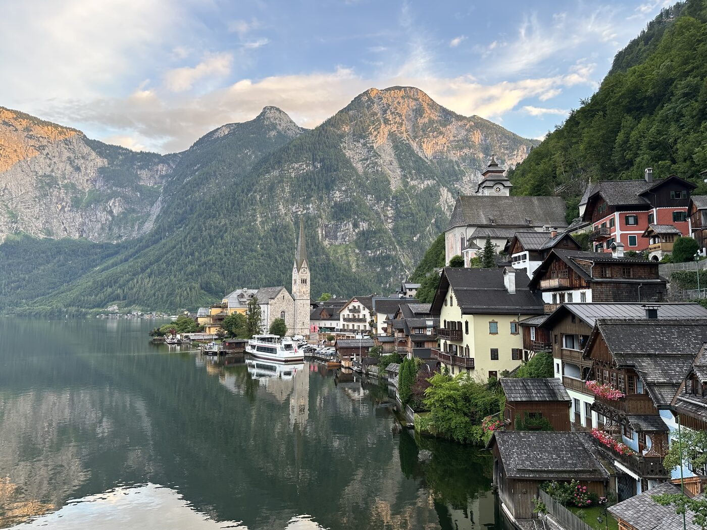
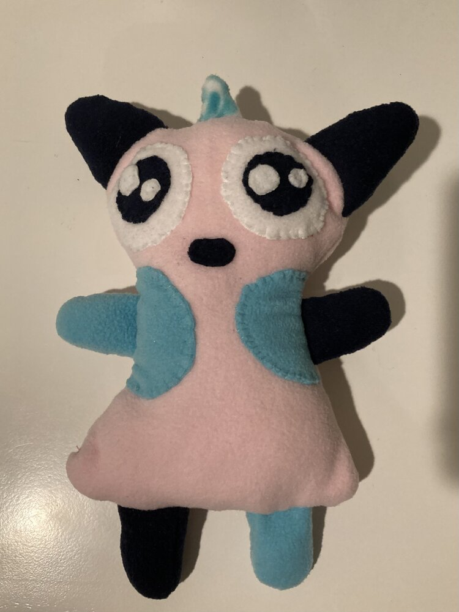
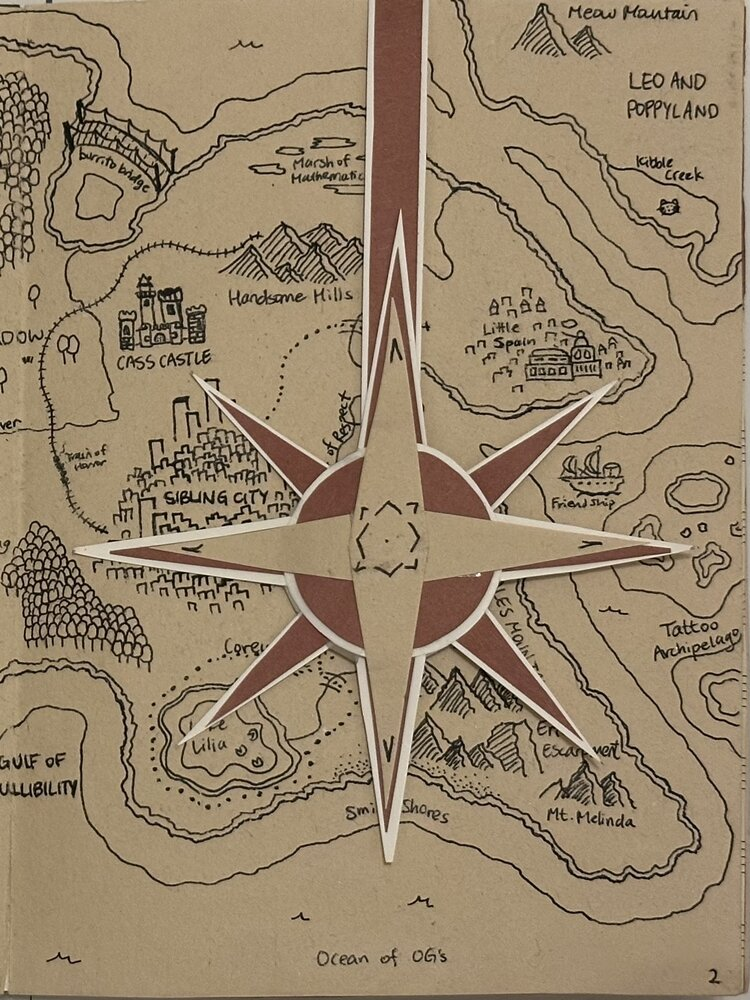
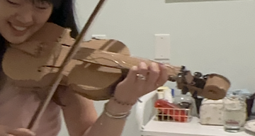

A running guide to the cities and places I've been to, written and used the way I'd send to a friend before their trip.

Nature and cities



Because if you can't afford a Strad, cardboard and packing tape will do.